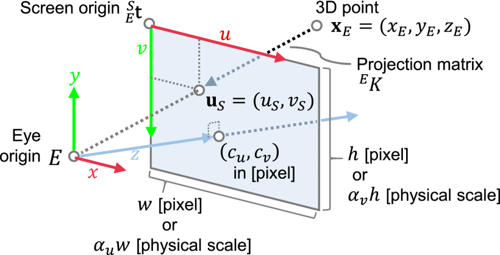

Scribe
Table of Contents
Geometric Model
Coordinates
Euclidean Plane
A point in (2-dimensional) space (a.k.a. plane), is defined as
The vector difference between two points is defined as,
The distance between two points is a symmetric function of the two points, defined as,
Euclidean Space
Extend the understanding to multiple dimensions, and we get Euclidean Space,
A point in (d-dimensional) space, is defined as
The vector difference between two points is defined as,
The distance between two points is a symmetric function of the two points, defined as,
Polar Coordinates
\(\mathbf{p} \equiv (r,\theta)\)
Defined by an origin, a pole, and each point in (2-dimensional) space is defined by
- \(r\), the distance between the point and origin; and
- \(\theta\), the angle between pole and the line joining the point and origin.
Spherical Coordinates
\(\mathbf{p} \equiv (r,\theta,\phi)\)
Extend the polar coordinates to three dimensional space, we get spherical coordinates.
Geo-spherical Coordinates
\(\mathbf{p} \equiv (\theta,\phi)\)
or
\(\mathbf{p} \equiv (1,\theta,\phi)\)
Useful when the space is a spherical surface, e.g.
- The surface of the earth;
- Projection surface (i.e. where the distance does not matter.)
Assume that for all points in space, \(r\) is constant; and hence redundant; and thus a point is expressed only in angular coordinates,
Coordinate Systems and Frames of Reference
Another way to define coordinate system is like specifying a reference frame. It’s also referred to as “space”. E.g.
-
Earth revolves around the sun.
\[\begin{align*} \begin{bmatrix} y\\x \end{bmatrix}_t &= \begin{bmatrix} r\sin\omega t\\ r\cos\omega t \end{bmatrix} \end{align*}\]where, \(\begin{bmatrix} y&x \end{bmatrix}_{t}^{\top}\) are Earth’s coordinates in “Sun’s space” or in “the coordinate system with respect to the Sun.”
where, \(\omega\) is the (uniform) angular velocity of (centre of the) earth; \(t\) is time; and that \(r\) is a constant (the earth-to-sun distance).
-
The Earth rotates around its axis;
\[\begin{align*} \begin{bmatrix} y\\x \end{bmatrix}_t &= \begin{bmatrix} r\sin\omega t\\ r\cos\omega t \end{bmatrix} \end{align*}\]where, \(\begin{bmatrix} y&x \end{bmatrix}_{t}^{\top}\) are coordinates of Earth’s surface in “Earth Axis’ space” or in “the coordinate system with respect to the Earth’s Axis.”
where, \(\omega\) is the (uniform) angular velocity of earth’s rotation about it’s (diametric) axis; \(t\) is time; and that \(r\) is a constant (the earth’s radius).
Linear Transformation
From Linear Algebra,
with \(\mathbf{x}\in\mathbb{X}\)
implicitly read as vector \(\mathbf{x}\) in vector-space
\(\mathbb{X}\).
Similarly \(\mathbf{y}\in\mathbb{Y}\), and
a linear map \(A:\mathbb{X}\to\mathbb{Y}\)
read as \(A\) maps \(\mathbb{X}\) to \(\mathbb{Y}\)
And \(A\) is a matrix.
Please note that if \(\mathbb{X}\) is \(M\) dimensional and \(\mathbb{Y}\) is \(N\) dimensional, then \(A\) is said to be \(N\times M\) dimensional, so that,
would imply that \(\mathbf{y}\) is a point in \(\mathbb{Y}\) corresponding to \(\mathbf{x}\) in \(\mathbb{X}\).
This operation is also known as linear transformation.
Geometric Transformation
Geometric Operations
- Scale
- Translate
- Rotate
- Shear
- Project (or, Projection)
Scale
Rotate
Shear
Homogeneous Coordinates
\(\mathbf{p}_{i}\) represents a ray in space rather than a point.
Advantages of using homogeneous coordinates
From linear algebra, we can represent,
But what about the following case?
This can be represented as \(\mathbf{y} = A\mathbf{x}\), if \(\mathbf{y}\) and \(\mathbf{x}\) are homogeneous coordinates.
(Think about it)
Translation
With homogeneous coordinates,
Transformation Matrices With Homogeneous Coordinates
-
Scale
\[\begin{align*} A &= \begin{bmatrix} s_1 & 0 & 0 \\ 0 & s_2 & 0 \\ 0 & 0 & 1 \end{bmatrix} \end{align*}\] -
Rotate
\[\begin{align*} A &= \begin{bmatrix} \cos\theta & -\sin\theta & 0 \\ \sin\theta & \cos\theta & 0 \\ 0 & 0 & 1 \end{bmatrix} \end{align*}\] -
Shear
\[\begin{align*} A &= \begin{bmatrix} 1 & a & 0 \\ 0 & 1 & 0 \\ 0 & 0 & 1 \end{bmatrix} \end{align*}\]
Geometric Transformation in 3-or-more Dims
The matrices here represent transformation with homogeneous coordinates;
-
Scale
\[\begin{align*} A &= \begin{bmatrix} s_1 & 0 & \cdots & 0 \\ 0 & s_2 & \cdots & 0 \\ \vdots & \vdots & \ddots & \vdots \\ 0 & 0 & \cdots & 1 \end{bmatrix} \end{align*}\] -
Translate
\[\begin{align*} A &= \begin{bmatrix} 1 & 0 & \cdots & t_1 \\ 0 & 1 & \cdots & t_2 \\ \vdots & \vdots & \ddots & \vdots \\ 0 & 0 & \cdots & 1 \end{bmatrix} = \begin{bmatrix} I & \mathbf{t} \\ \boldsymbol{0}^T & 1 \end{bmatrix} \end{align*}\] -
Shear
\[\begin{align*} A &= \begin{bmatrix} 1 & a_{12} & a_{13} & \cdots & 0 \\ 0 & 1 & a_{23} & \cdots & 0 \\ \vdots & \vdots & \vdots & \ddots & \vdots \\ 0 & 0 & 0 & \cdots & 1 \end{bmatrix} = \begin{bmatrix} I+U_0 & \boldsymbol{0} \\ \boldsymbol{0}^{\top} & 1 \end{bmatrix} \end{align*}\]where, \(U_{0}\) is an upper triangular matrix with zero diagonals.
Advanced Topics
Projection and Rotation in 3D are considered to be advanced topics in Computer Graphics. The curious readers are encouraged to follow the course UCS505 for details.
As in practice, the students shall use mature libraries, instead, to this effect.
Composing Transforms
-
Interpretation
A transformation is interpreted as to “correspond from one space to another.”
-
Example
Let’s consider our solar system.
-
A point that sits on the surface of the earth with long-lat as \((\theta,\phi)\), is given as:
\[\begin{align*} \mathbf{p}_e &= \begin{bmatrix} r_e\cos\theta\cos\phi \\ r_e\cos\theta\sin\phi \\ r_e\sin\theta \\ 1 \end{bmatrix} \end{align*}\]using homogeneous Cartesian coordinates.
-
The earth rotates around its axis, with a uniform angular speed \(\omega_a\). So in the axis-space, the coordinates would be, loosely speaking, \(\mathbf{p}_e\) rotated by \(\omega_{a} t\). And formally given as,
\[\begin{align*} \mathbf{p}_a &= A_{ae}\mathbf{p}_e \\ A_{ae} &= \mathrm{rot}(\omega_a t+\phi_{a,0}) \end{align*}\] -
Similarly in sun-space,
\[\begin{align*} \mathbf{p}_s &= A_{sa}\mathbf{p}_a = A_{sa}A_{ae}\mathbf{p}_e \\ A_{as} &= \mathrm{rot}(\omega_s t+\phi_{s,0}) \end{align*}\] -
Effectively, if \(\mathbf{p}_s = A_{se}\mathbf{p}_e\), we have,
\[\begin{align*} A_{se} &= A_{sa}A_{ae} \end{align*}\]This method is called (de)composing.
-
Model-View-Projection
-
Model Space
Continuing with the same example, let’s assume that “the sun” is our “model space.” And \(A_{se}\) expresses a point on the earth’s surface in the sun-space.
-
View Space
We would like to view the system from a point in space looking at the solar system so that the view is fully captured within a \(60^{\circ}\) field of view.
If the point of view is located at \(\mathbf{p}_c\) in model space, and the camera is looking at point \(\mathbf{p}_v\) in model space; we should be able to (de)compose the transformation from model-space to “view space” or “camera space” as a sequence of geometric transformations.
Some practical references to the
glm::look_atfunction: -
Projection Space
Depending upon whether the camera is orthogonal or perspective, we finally capture the projection of “the scene,” on an imaginary projection screen kept at \(\begin{bmatrix}0&0&1\end{bmatrix}^{\top}\). This is called “the projection space.”
-
The MVP Transformation
To compute the coordinates of a point on object, say \(\mathbf{p}_e\), as projected onto a projection space, \(\mathbf{p}_{\pi}\), we compute this as,
\[\begin{align*} \mathbf{p}_{\pi} &= PVM\mathbf{p}_e \end{align*}\]where,
\(P\) is the transformation matrix from view space to projection space;
\(V\) is the transformation matrix from model space to view space; and
\(M\) is the transformation matrix from object space to model space.
Geometric Image Formation

The Pinhole Model (Fig.
The fundamental geometric model for any camera is the Pinhole Camera Model. It simplifies the complex optics of a lens to a single aperture, or pinhole, which projects a 3D point \((X, Y, Z)\) onto a 2D image plane \((x, y)\).
Using homogeneous coordinates, this transformation can be concisely expressed as a matrix multiplication:
- \(\mathbf{P} \equiv \begin{bmatrix}X & Y & Z & 1\end{bmatrix}^T\) is the 3D point in world coordinates.
- \(\mathbf{p} \equiv \begin{bmatrix} x & y & 1 \end{bmatrix}^T\) is the homogeneous counterpart of 2D point \((x, y)\) in image coordinates (projected to 3D).
- \(s\) is an arbitrary scale factor (often \(=Z\), i.e. the depth).
- \([\mathbf{R} | \mathbf{t}]\) is the Extrinsic Parameter Matrix (a \(3 \times 4\) matrix combining a \(3 \times 3\) rotation matrix \(\mathbf{R}\) and a \(3 \times 1\) translation vector \(\mathbf{t}\)). This defines the camera's position and orientation relative to the world coordinate system.
- \(\mathbf{K}\) is the Intrinsic Parameter Matrix (a \(3 \times 3\) upper-triangular matrix), which maps normalized camera coordinates to pixel coordinates. It depends on focal lengths (\(f_x, f_y\)) and the principal point (\(c_x, c_y\)).
This model formalizes the loss of depth information and provides the framework for tasks like 3D reconstruction (Structure from Motion) and position estimation (Visual Odometry).
Camera Tracking
- Calibration and registration are fundamental processes in AR.
- Calibration aligns the camera w.r.t. the real world.
- Registration aligns digital content w.r.t. the camera.
- Without proper calibration and registration, virtual objects would appear to float, jitter, or be incorrectly scaled, breaking the immersive illusion of AR.
Calibration
Determine the camera properties,
- Intrinsic Params
- Focal length \((f_x, f_y)\)
- Principal point \((c_x, c_y)\)
- Skew coefficient : typically assumed to be zero.
- Distortion coefficients \((k_1, k_2, p_1, p_2, k_3, \ldots)\) that account for radial and tangential distortions.
- Extrinsic Params (Camera Pose, i.e. its precise
position and orientation)
- Rotation matrix, \(R\)
- Translation vector \(\mathbf{t}\)
(As covered in the geometric model)
Registration
Align virtual content with the real world in real-time,
Scene Information Extraction:
- Feature Detection
- Sensor Fusion
Temporal Correspondence Estimation:
- Correspondence across scene information
- Marker-based AR: Detect markers and establish correspondence
- Markerless/SLAM-based: Use features to establish correspondence.
Pose Estimation (Real-time tracking)
- Estimate 6 DoF camera pose using correspondences;
- This is an iterative process of refining the pose as new frames are captured, and new correspondences are established.
- Algorithms used:
- Perspective and point (PnP)
- Bundle Adjustment
- Filtering techniques (e.g. Kalman filters, particle filters)
Virtual Content Overlay
- Based on estimated camera pose, and predefined transformation of virtual content relative to tracked real world, virtual content is rendered and projected onto the camera’s view.
- Three key operations, so that the virtual objects
appear to be a natural part of physical
environment:
- Estimating geometric transformation (namely perspective, scale and rotation)
- Estimating illumination model;
- Occlusion handling.
Registration Strategies
- Marker-based : Track the marker
- Markerless : Track the natural features
- Model-based : Track the geometric model of the real world
- Location-based : Based on GPS/IMU data, typically, in an outdoor setting.
Essentially
- Calibration is a one-time (or occasional) process to characterize the camera itself; while
- Registration is the continuous, real-time process, to correctly place virtual objects in the augmented view.
References
\printbibliography[heading=none]